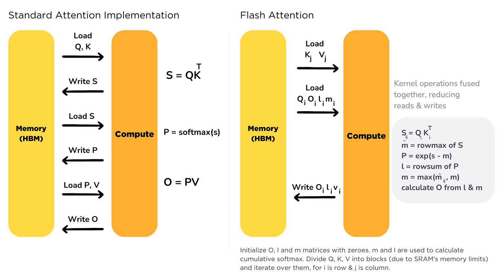
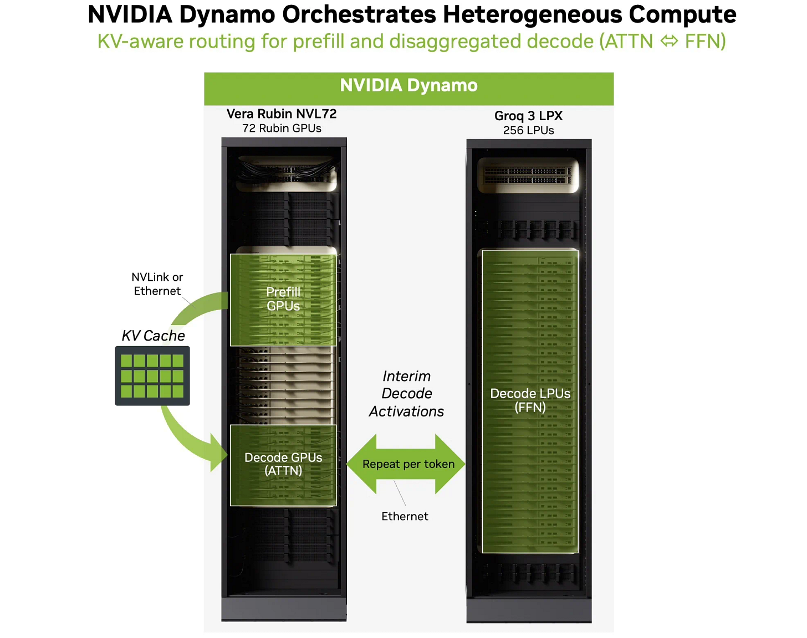
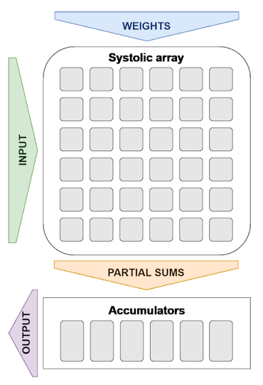
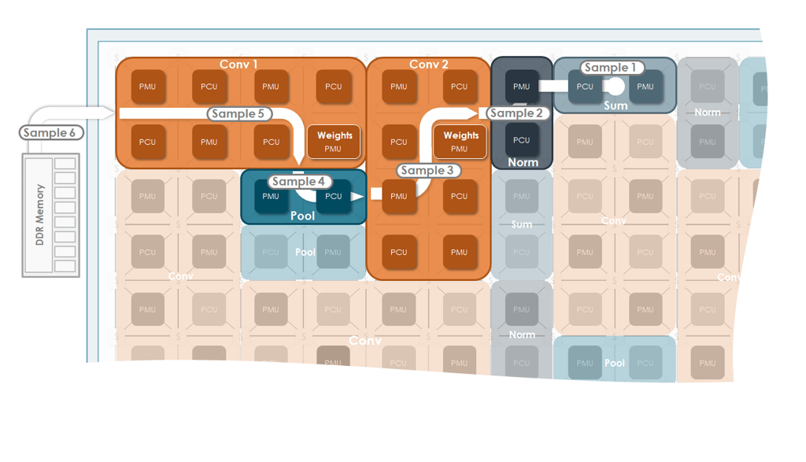
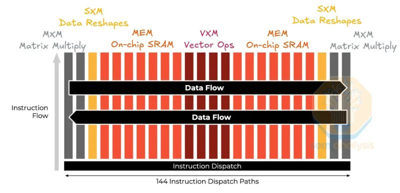
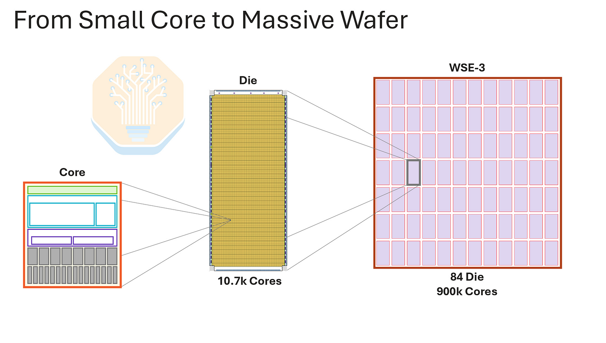
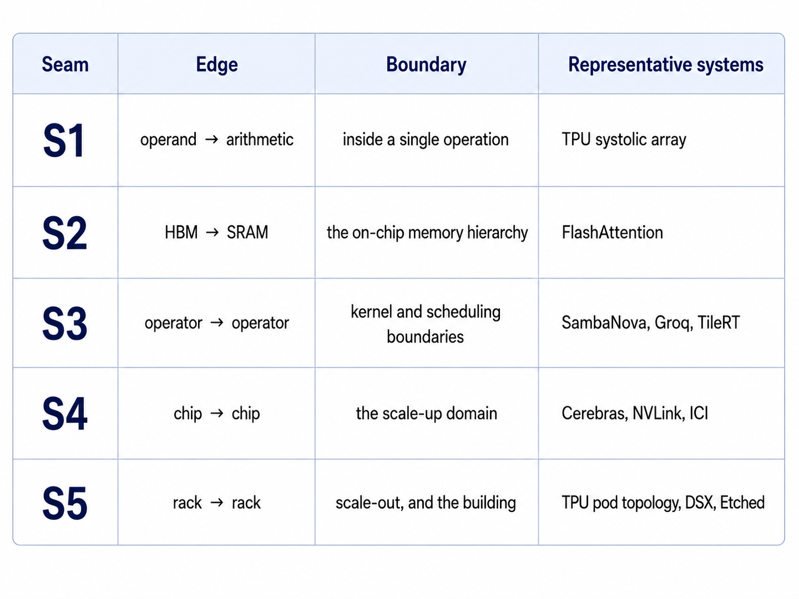
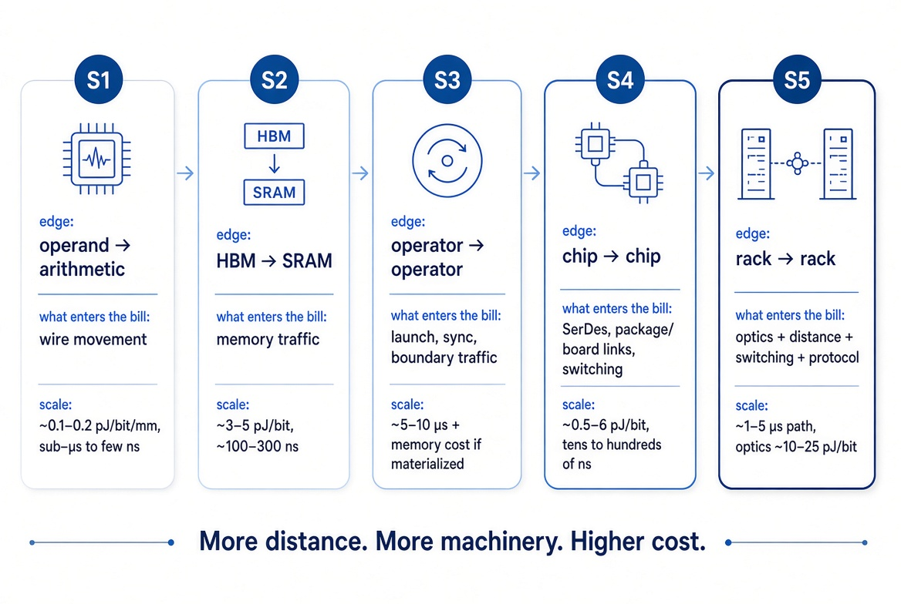
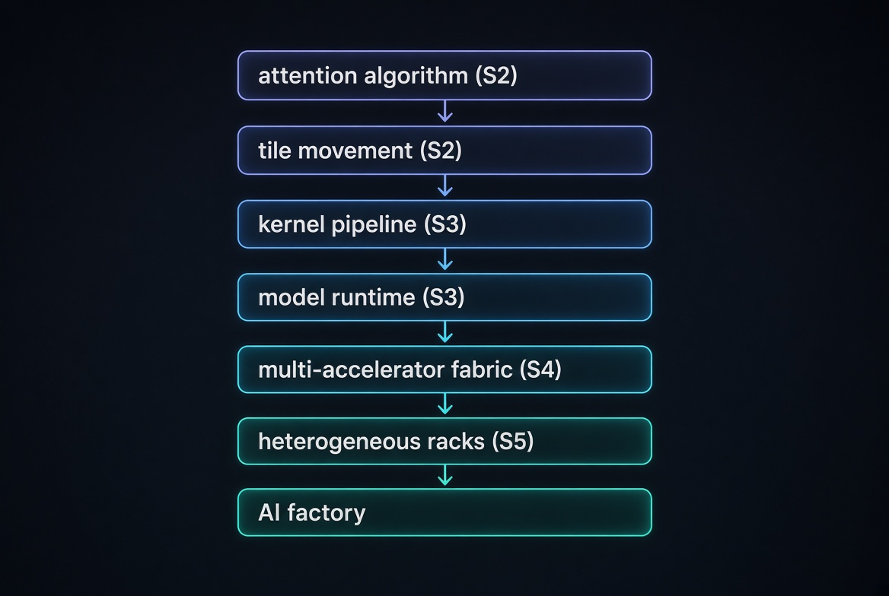
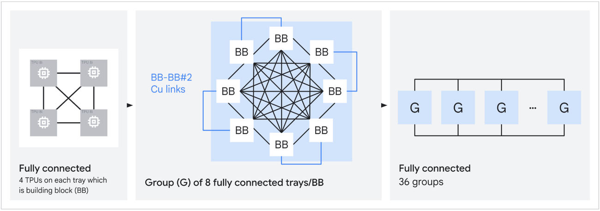

FlashAttention、Megakernels、Boardfly TPU、Taalas、极端协同设计：过去几年最大的硬件进展都在收敛到数据流（dataflow）上。
我在看Eric Vishria解释为什么Benchmark在避开硬件十年后投资Cerebras。他的论证简单：你加更多计算，也需要更多附近的内存和计算单元之间更多带宽。三者一起扩展，最终芯片边界挡路。Cerebras的答案是让芯片和wafer一样大。
那是2016年，当时看起来像极端立场。2026年5月Cerebras以超560亿美元上市，与OpenAI签了多年部署750兆瓦wafer规模系统的协议。
这个赌注老得好，因为它从来不是关于wafer。它关于一个边界。计算持续变快，喂它的东西没有，跨越它们之间的成本成了设计问题。Cerebras很早就把这个观察推到物理极限。其他人此后一直从不同方向到达同一地方。
直白的实现把attention分数矩阵写进HBM、读回做softmax、再写读另一个大中间量后乘V。FlashAttention改用tile。Q、K、V块被带进SRAM，算一块分数，更新softmax状态，结果在数据还在片上时被消费。完整attention矩阵从不需要存在于HBM。反向传播时它重算值而非存储重载，因为在现代加速器上额外算术可能比再走一趟内存便宜。

要点不是数据停止移动。是生产者-消费者链围绕内存层级重组：值离计算足够近、够久以被复用，在必须写回前被消费。同一attention，不同物理执行。
那是一个边界：HBM到SRAM。还有四个。
seam是一条跨越物理边界的生产者-消费者边。边界可能坐在操作内部、内存层之间、算子之间、芯片之间或机架之间。对每条边，系统必须决定值住在哪、如何移动、消费者何时能跑。放置和调度耦合：值住哪影响它何时到达，何时被消费影响它必须存活多久。

五个seam组织几乎后面的一切。本系列余下部分我将用编号引用它们。
我用 *seam* 是因为没有任何单一现有术语横跨全部五个边界。单个想法已有自己的文献：内存I/O、通信避免算法、放置和路由：但生产者-消费者路径是共同对象。
顺着这些seam向外，设计目标变大：从操作内的移动，到算子与芯片间的通信，最终到token穿过几种机器所走的路径。
每次依赖跨过一条seam，它就获得一份物理账单。seam伸得越远，能进账单的东西越多：距离、串行化、缓冲、重定时、交换、协议、同步。
成本不随seam编号完美增加：好的芯片间链路可能比一次HBM访问便宜。真正增加的是生产者和消费者之间坐了多少机械。
算术越快，那些边界越重要。这就是为什么AI系统不断把昂贵的seam拉进架构。
数据流远老于当前加速器产业。经典模型里，操作在其输入可用时变得可执行。执行跟随生产者-消费者依赖，而非程序计数器走过固定指令序列。

A → ADD → C ← B。那个触发规则是关于因果的陈述：ADD在A和B存在前不能跑。数据流机器把那个依赖带进执行本身。值被产生、路由、存储、与消费者匹配，然后启用下一工作。
研究者几十年前就围绕这个想法造机器。Dennis的静态数据流模型、MIT tagged-token架构、Manchester Dataflow Machine在如何表示和调度依赖上不同，但共享同一问题：工作单元小。如果每个标量操作都需要操作数匹配、token存储、路由和调度，算术周围的机械可以贵过算术本身。
深度学习改变了那个经济学。由一个放置或调度决策管辖的单元现在可以是一个张量tile、一个融合算子、或一个含数百万操作的整个流水线阶段。图异常规则、以巨大规模重复。花几分钟或几小时编译模型有意义，当结果映射运行数十亿次。
说同一件事的另一方式是换视角。不从一个单元开始问它执行什么，而是跟随值：它在哪产生、如何被变换和路由、下一步在哪消费。
所以本系列的工作定义：数据流导向系统把生产者-消费者依赖保持显式到执行中，使放置、存储、移动和调度能围绕它们组织。seam阶梯追踪那个依赖物理上伸多远。
2016年后出现的芯片被归为一组「数据流加速器」。那掩盖了有趣的部分。每个攻击传统机器支付的不同税。



TPU硬连线内循环。TPU核心围绕Matrix Multiply Units构建。每个MXU内操作数流过脉动阵列，从一个乘加单元移到下一个时被复用。编译器把更大张量操作tile到这些单元上并保持喂饱。移除的税是稠密矩阵乘法内的操作数移动：值靠近算术、而非反复穿过通用内存层级。TPU让S1成为架构。
SambaNova把模型映射到空间机器。RDU是计算单元、SRAM内存单元和可配置开关的fabric。编译器决定每个操作在哪跑、中间张量住哪、值如何在它们之间移动。芯片不同区域同时执行模型不同部分；激活可以直接流入其消费者，而非成为后来要读回的内核输出。TPU固定一个主导算子内的流。SambaNova让编译器负责跨算子流水线：买到跨算子局部性和重叠，让物理放置成为编译的一部分。SambaNova让S3成为编译器目标。
Groq把模型变成时刻表。Groq给编译器类似权威并扩展到精确时序。SRAM是主存储而非缓存，计算、内存访问和芯片间通信在执行前被调度。编译器决定值何时被读、矩阵操作何时开始、结果何时传输、下一个芯片何时消费。结果是确定性延迟：缓存未命中、动态仲裁和大部分运行时调度离开关键路径。SambaNova让放置和路由显式；Groq更进一步，提前固定到达时刻表。
Cerebras把芯片间通信搬到wafer上。Cerebras也做编译时放置和路由，但基底不同。Wafer-Scale Engine是处理单元的大二维mesh，每个有本地SRAM和路由器。传统加速器集群反复离开一个封装、跨SerDes和交换机、进入另一个。Cerebras把片上mesh拉伸横跨wafer，把一大类本来会是网络通信的传输变成短片上移动。Cerebras让S4成为硅决策。
值得注意Cerebras没有吸收什么。WSE-3带着约44 GB片上SRAM，不够装前沿模型权重，所以权重住在外置MemoryX设备里、逐层流进wafer，而激活保持驻留。行业里最激进的S4答案刻意保留一个S2式seam。记住这个；它是最后一篇的问题所在。
四种税：TPU → 减少矩阵计算周围的操作数移动；SambaNova → 减少算子之间的内存和调度成本；Groq → 移除运行时时序不确定性；Cerebras → 移除封装和网络距离。
seam不同。把它们拉进设计的原因相同。
那些架构在训练时代建造，当时灵活性和聚合吞吐占主导。推理改变优化目标。
生产模型可以稳定数月、执行数十亿次，使更多编译和特化值得。但它运行在动态需求下，按首token时间、每输出token时间、尾延迟、每美元token、每瓦token评判。
自回归decode为每个token重复几乎相同的图。计算图高度可预测。穿过它的状态不可预测。请求不同时间到达。输出长度未知。批次每轮变。KV缓存增长和消失。前缀复用变化。MoE路由取决于当前token。
稳定计算图 + 动态状态和需求。
这制造天然张力。编译器可以特化张量布局、内核流水线、模型分区、通信调度和硬件放置。运行时仍必须处理请求准入、批次组成、KV分配、缓存路由、专家失衡和故障。
行业不是朝一个方向移动那个边界。它在重画它，而工作负载在画。
我在SambaNova花了多年在这些问题上，我们的编译器把计算、内存和通信路由放到物理fabric上。空间place-and-route对静态形状最有效。生产推理带来可变序列长度、批大小和并行选择。

我们用预编译映射的库覆盖缺口。每个新模型和上下文长度使我们必须生成和验证的组合倍增。最终我们围绕动态张量重建，把更多绑定和调度移进运行时，用静态效率换一个能适应的系统。
这是这个故事诚实的版本。把seam拉进机器不是免费的，生产动态性可以把它推回去。那时不寻常的东西现在到处出现，从GPU内核到机架规模系统。
GPU仍是SIMT机器。围绕性能关键路径，NVIDIA已稳步把数据移动和张量执行变成显式生产者-消费者流水线。


在Hopper上，Tensor Memory Accelerator异步在全局和共享内存之间移动多维tile；一个线程发起移动而块其余继续工作，warp特化成生产者和消费者。Blackwell扩展分离：第五代Tensor Core操作可由单线程发出、异步执行、把累加器存进专用Tensor Memory，相邻CTA在更大矩阵操作上协作。
越来越少线程越来越发出异步内存和张量操作，而专用硬件引擎执行它们。编程模型在跟随。CuTe和CUDA Tile把tile、布局、拷贝、MMA操作和流水线暴露为显式概念，Tile IR让编译器选择warp特化、TMA使用、预取深度、寄存器压力和共享内存staging。有用的问题从「这个线程执行什么」变成「这个tile如何穿过机器」。第2篇完全关于这个。
软件从上面收敛到同一答案。TileRT：来自TileLang DSL背后的团队：把LLM算子分解成tile级任务，跨多个GPU一起调度计算、I/O和通信，把decode图编译成单个持久megakernel。以前在内核启动之间协调的工作现在调度进一个长运行GPU程序内部。它当前针对八-B200系统上的特定前沿模型，采用vLLM处理prefill、TileRT处理延迟敏感decode的拆分。
这值得精确，因为它是整个系列的点。TileRT不是数据流芯片。它是SIMT基底上的数据流表示，做着空间编译器做的事：让算子到算子的边显式、把移动对计算调度。算子边界仍存在；它不再必须是内核启动边界。它仍是S3边，现在从GPU内部控制。
同样的转变比大多数人以为更早到达网络。SHARP网内归约在2022年Hopper上随第三代NVSwitch到达NVLink域：all-reduce、reduce-scatter和all-gather的部分在交换机fabric内执行。NVLink 6扩展它。交换机不再只转发collective流量；它执行部分归约。
然后设计边界到达机架和建筑。NVIDIA的Vera Rubin DSX参考架构把计算、网络、存储、电源、冷却、仿真和运营当作一个协同设计系统，以每瓦token和投产时间为目标指标。
叠加这个进展：SIMT仍是灵活控制基底，处理不规则代码、动态行为和操作长尾。数据流机制塑造热路径，那里局部性、重叠和可预测依赖占主导。收敛是分层的，不是全盘替换。
在远端极端，Taalas把单个模型变成定制硅。它的论点是「模型即计算机」：编译器的输出变成硬连线硬件，通过微调保留一些适配，每个模型只定制几层金属。2026年8月，AMD同意收购它。

AMD真正想要的还不清楚，而模糊正是有趣的部分。可能是芯片：硬连线decode硅与Instinct GPU并排坐进Helios机架，同一异构拆分的第三个实例。也可能是流程：一个把训练模型变成约两个月tape-out硅的设计方法论。第二种读法有后果，因为它意味着资产从来不是硬件。是编译器，一路延伸穿过制造。
无论哪种，八个月内两种激进的专门化形式：计算和通信的编译时调度、以及模型特定硅：被GPU厂商吸收并瞄准推理。NVIDIA拿走Groq的团队、资产和一个许可而非公司。AMD完全买下Taalas。
不是每个seam都应该拉进机器。怎么拉也重要得多。更紧的耦合改善局部性和可预测性，牺牲灵活性。推理让那个权衡变乱：序列长度未知、MoE路由取决于token、投机解码是随机的、架构不断变。Cerebras故意保留一个S2 seam。我们在SambaNova为了在生产中存活交回静态效率。停止条件应该能从每条边的频率、体积和可预测性算出：这是最后一篇的问题，也是本系列有它的原因。
让数据流在2026年成为有用的系统镜片的是，它不再识别一个加速器家族。它描述AI把逻辑依赖变成物理架构的反复过程。
第一个加速器时代问哪个芯片该跑图。下一个问图该伸进机器多远。
五篇文章，从芯片到数据中心跟随seams。
S2：GPU。线程如何不再是工作单元：TMA、warp特化、Tensor Memory、持久内核，以及tile级编程模型实际改变什么。
S3：编程模型。为什么AI编译器越来越多在执行前放置计算、内存和通信，什么能静态决定，什么必须保持动态。
S4：scale-up。NVLink、ICI、wafer级fabric、网内计算，以及紧耦合加速器如何一起执行一个图。
S5：系统。Disaggregated inference、动态路由、未知长度，以及停止条件：紧耦合何时有帮助，系统何时应刻意保留一条seam。
参考：https://davidhdong.substack.com/p/2026-the-year-of-dataflow